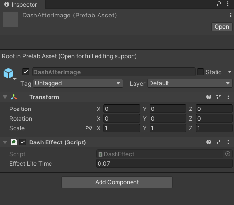

DashEffect
SWITCH TO SCRIPTINGOverview
The DashEffect class manages the after-image effect of the dash mechanic in the game. It controls the appearance and disappearance of the dash trail, setting
its lifetime and adjusting its visibility based on the character's movement. This component enhances the visual feedback of the dash action, providing a
smoother and more immersive gameplay experience.
To utilize this component effectively, simply attach it to the root of the game object intended to function as the after-image object of the dash.
Inspector
| EffectLifeTime | The lifetime of the dash after-image before it disappears. |